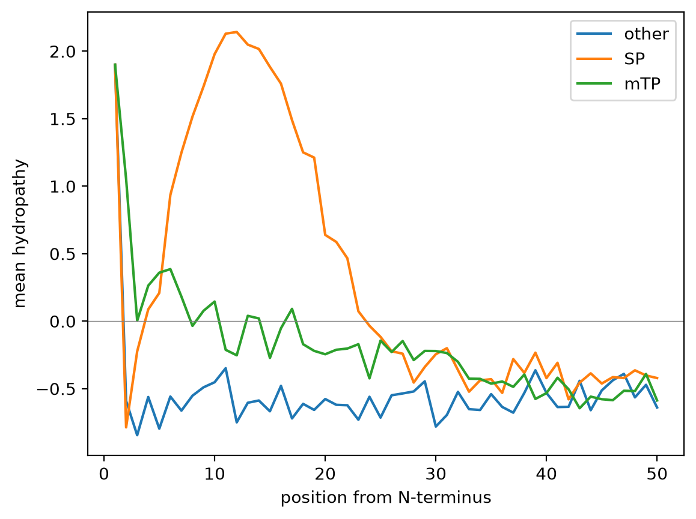

Mean Kyte-Doolittle hydropathy at each position, per class. Signal peptides show a hydrophobic core around positions 5–20 and return to normal near the cleavage site; transit peptides are only moderately hydrophobic.